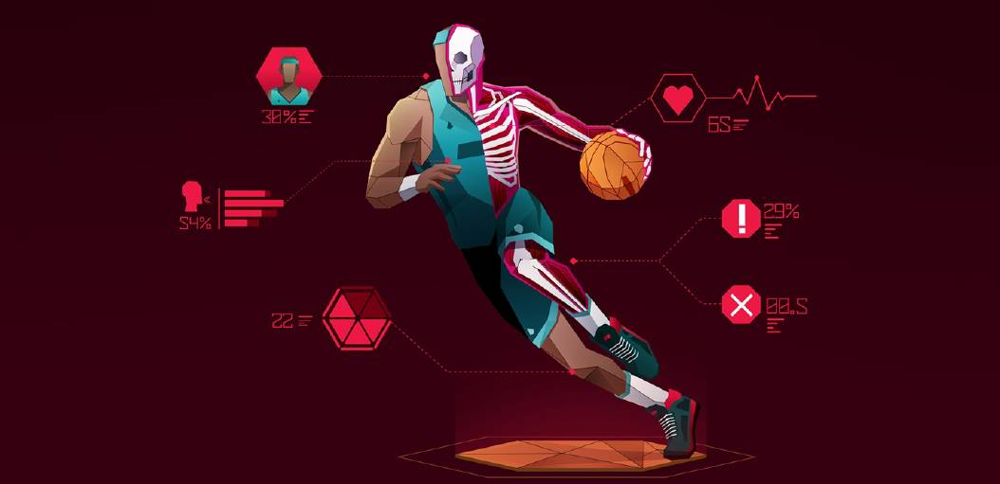
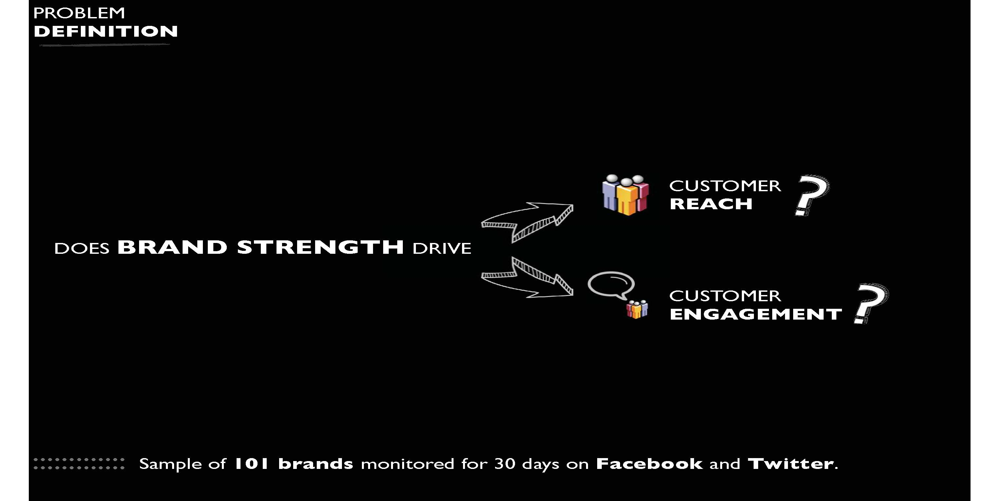
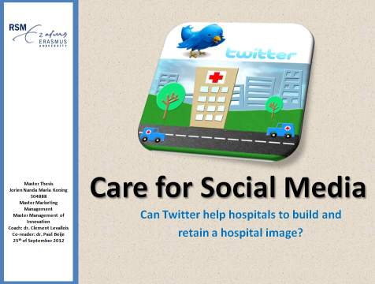
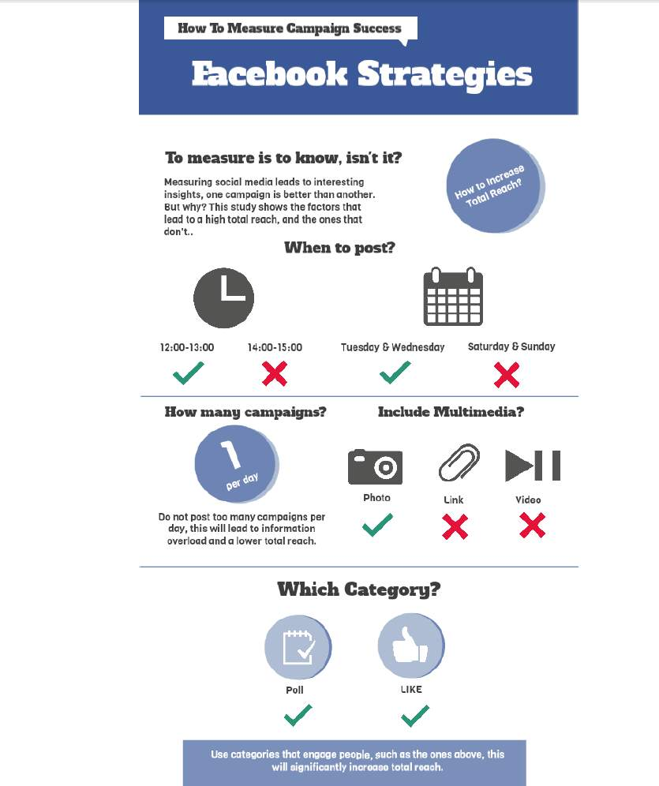
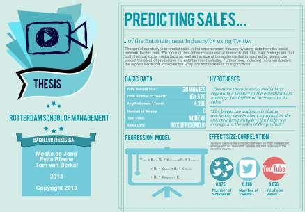
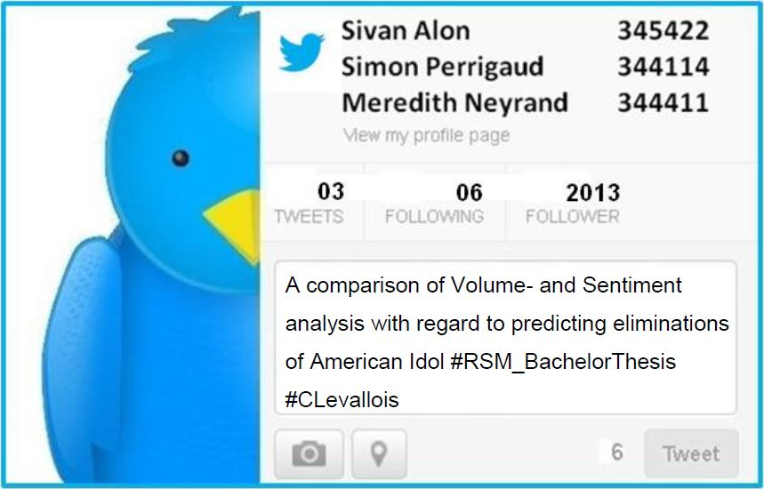

Bachelor and Masters Theses You'll Enjoy Reading
These dissertations are the work of students I had the privilege to coach or to be a co-reader for.
|  | Le Big Data et l’Intelligence Artificielle dans le sport professionnel téléchargez le document par  Charles Fayolle et Eliott Lam-Seck, pour leur projet de fin d'études à EMLYON Business School, 2019 Charles Fayolle et Eliott Lam-Seck, pour leur projet de fin d'études à EMLYON Business School, 2019
En observant toutes les nouvelles applications du Big Data dans notre quotidien ainsi que dans le sport, nous avons voulu comprendre et répondre à la question suivante : « Quel est l’impact du Big Data et de l’intelligence artificielle dans les sports collectifs professionnels ? ». Ainsi nous avons essayé à travers de nombreuses recherches d’offrir une réponse à cette question et cela en trois parties. Le sport de haut niveau ne concerne pas seulement l’aspect athlétique. Il ne concerne pas non plus seulement l’aspect
tactique ou encore technique. L’enceinte sportive ainsi que les supporters sont des acteurs tout aussi importants. Les partenaires et sponsors participent à faire vivre le sport professionnel. Le progrès technologique est impératif pour faire grandir le sport collectif dans tous les sens du terme. Il ne faudrait cependant pas tomber dans l’excès et en abuser tant cela risque de dénaturer
ce que nous affectionnons.
|
| L'économie collaborative en Chine téléchargez le document by Cheng HANDA, pour son projet de fin d'études à EMLYON Business School, 2016
Ce qu’on appelle communément l’économie collaborative aujourd’hui est surtout le reflet de deux entreprises dans l’opinion publique : Airbnb et Uber. Mais le phénomène se répand désormais dans tous les secteurs de la société : la santé, l’éducation, la finance voire la politique. Dans la planète des startups, il ne passe pas un mois sans qu’nouvelle plateforme ne se lance pour « disrupter la vieille économie ». Est-ce une nouvelle forme de capitalisme ? La fin du salariat ? Une simple logique d’optimisation des ressources disponibles ? Le retour à un modèle social communautaire? L’économie collaborative suscite autant l’espoir que des questionnements au vu de l’ampleur et la vitesse à laquelle elle commence à bousculer notre quotidien.
Mais qu’en est-il du phénomène dans un pays où le partage est encore associé aux heures sombres du communisme ? Où Facebook, Twitter ou Youtube sont censurés et remplacés dans l’usage par Weibo, WeChat, QQ, Douban ou Youku, des sites inconnus en France qui attirent pourtant chaque jour les 600 millions d’internautes Chinois5 ? Un gouvernement centralisé voit-il d’un bon oeil un phénomène prônant la transparence et un fonctionnement décentralisé ? |
|
| Le big data dans l'énergie téléchargez le document by Clémence FRAYSSE et Brice PLAISANCE, pour leur projet de fin d'études à EMLYON Business School in 2015
Notre étude a pour ambition de décrire d’une part le secteur de l’Énergie actuel, ses évolutions récentes, ses acteurs, ses défis à venir. Nous étudierons principalement la zone France tout en nous laissant la liberté d’utiliser des exemples européens ou mondiaux dans des pays où le secteur de l’Énergie est parfois plus avancé dans cette transformation.
D’autre part nous tenterons d’exprimer ce que nous entendons par « révolution big data » et quels sont les domaines d’application énergétique actuels et à venir de cette évolution technologique. Nous montrerons que, comme le décrit Jérémy Rifkin, l’utilisation de la donnée numérique nous semble être au coeur d’une révolution de la société et à fortiori du secteur de l’Énergie qui y tient une place centrale. Comment le secteur va-t-il se transformer ? Quelles opportunités cette révolution fait-elle naître ? Quelles menaces ? Ce sont ces questions que nous nous sommes posés face à ce changement à venir du paysage énergétique français et mondial, et ce sont à ces questions que nous allons donner des éléments de réponse dans le coeur de notre étude. C’est en partie pour répondre aux doutes posés par une révolution encore méconnue du grand public que nous chercherons à éclairer nos lecteurs sur ce phénomène nouveau qui se répand sur tous les pans de notre économie. Et c’est avec conviction que nous essaierons de dresser un aperçu des projets déjà en oeuvre ainsi que des perspectives offertes par l’utilisation de la data dans l’Énergie. C’est dans cet esprit que nous essaierons de répondre à la problématique suivante : Dans quelle mesure les promesses du big data sont-elles une réponse faite à l’impasse énergétique de notre société ? |
|
|  | Advantages of strong brands on customer reach and customer engagement on social media marketing download the dissertation by Raphael Menezes, as a Master Thesis for 2013 at the Rotterdam School of Management.
This study sheds a light on whether brand strength can influence customer reach and customer engagement in an online context, using as basis for the study data collected from the two
largest social media platforms: Facebook and Twitter. Results of this study show that more valuable brands are able to obtain more customer reach, but the same effect is not verified
on creating customer engagement. A better understanding of the mechanisms of social media platforms and its marketing-related objectives can be useful in increasing
effectiveness of online marketing activities and also help guiding marketers into aligning marketing strategy with the correct set of metrics on social media.
|
|  | Care for Social Media: Can Twitter help hospitals to build and retain a positive image? download the dissertation by Jorien Koning, as a Master Thesis for 2012 at the Rotterdam School of Management.
In today’s Dutch healthcare environment, which is characterised by the transformation into a free market and the trend of patient empowerment, patients have become active participants in the decision making process for a health care institution. Hospital image and reputation are important instruments for healthcare marketers to develop effective marketing strategies that should ensure the flow of patients and hence a hospital’s long term survival. Given that many people have incorporated social media into their daily life’s, more and more hospitals have included social media in their marketing and communication mix, nevertheless only limited scientific research have been carried on the topic of social media in a healthcare environment.
This study examines the goals and applications of social media in a health care environment, and the effects of different social media strategies to achieve these goals. |
|  | Facebook strategies: How to measure campaign success download the dissertation by Guido Soonius, as a Master Thesis for 2012 at the Rotterdam School of Management.
This thesis focuses on the measurement of Facebook campaigns posted by companies on their own Facebook page. The thesis extends current knowledge on the measurement of Facebook campaigns by developing a framework that helps companies determine the success factors of its campaign and thereby supporting in developing a social media strategy. The research is based on the data of four Dutch companies that belong to the top 100 most active brands on Facebook in the Netherlands. A regression analysis is conducted to determine the validity of the proposed social media framework. The findings are novel, as academic research has not yet focused on such a detailed form of Facebook measuring.
|
|  | Using Twitter to Explore the Effect of Social Media Buzz on Sales download the dissertation by Tom van Berkel, Evita Bizune, Meeke de Jong, as a Bachelor Thesis for 2013 at the Rotterdam School of Management.
This article argues that social media buzz as well as the size of the audience reached by the buzz can be used to predict the sales of products in the entertainment industry. In particular, we examine Twitter and YouTube data to predict the revenues of box-office movies.
We state that the average number of followers per tweet per hour (follower rate), the average number of tweets per hour (tweet rate) and a novel variable of the total number of YouTube views for an official trailer are all strong predictors of the movies’ sales. Furthermore, we argue that including more variables such as the total number of theatres a movie is released in, improves the explanatory power of the regression model. |
|  | Predicting American Idol with Twitter Sentiment download the dissertation by Sivan Alon, Meredith William Neyrand, Simon Perrigaud, as a Bachelor Thesis for 2013 at the Rotterdam School of Management.
In an attempt to add to the body of research on the topic of electoral predictions with Twitter we have tried to predict the eliminations of contestants from American Idol 2013.
To this end, we have conducted a literature review to uncover the trends in the existing literature and to isolate the factors that might improve our methodology. Building on the study by Ciulla et al. (2012) we have extracted over 40,000 tweets and constructed one prediction model based primarily on tweet volume and a second model focusing on sentiment. In line with our hypothesis, we found that sentiment improved the prediction accuracy. Furthermore, we found that the overall accuracy of our predictions were low when compared to the findings of Ciulla et al. As a result, we have outlined the possible reasons and limitations of our study and suggest four main points of improvement for further research. |